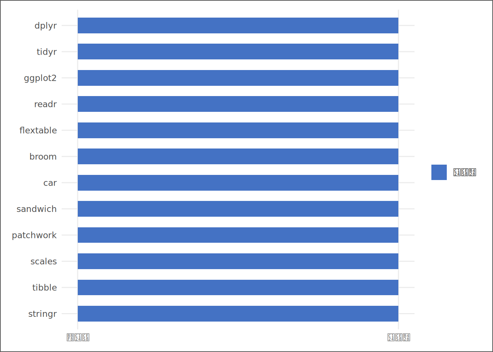
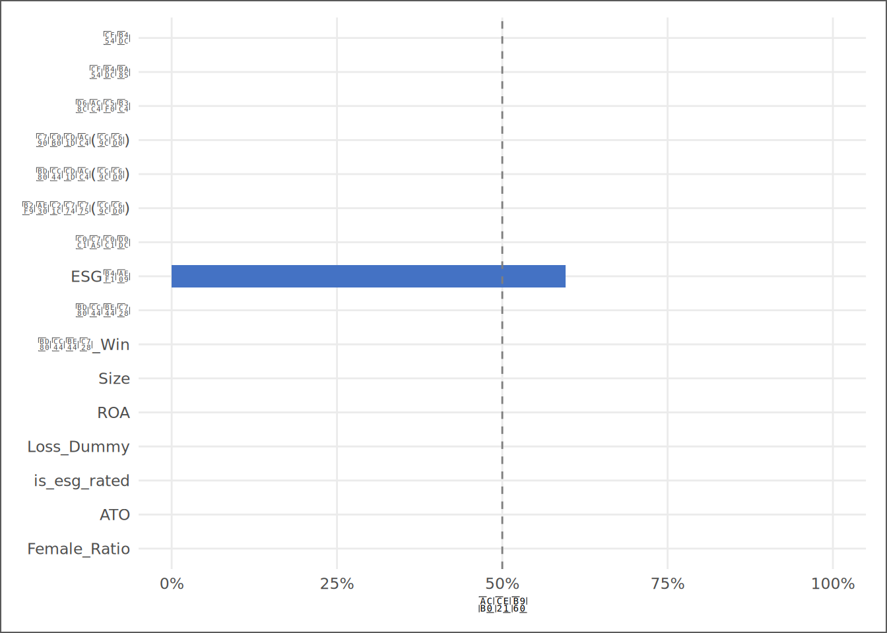

# | 키워드 | 한 줄 핵심 |
|---|---|---|
1 | 재현성 (Reproducibility) | 코드·데이터·환경이 갖춰지면 누구든 같은 결과를 낼 수 있다 |
2 | R 프로젝트 (.Rproj) | 프로젝트 루트를 고정해 상대 경로의 기준점을 만드는 파일 |
3 | 4분리 폴더 구조 | Input·Script·Output·Report — 역할이 다른 것은 폴더가 다르다 |
4 | 패키지 설치 vs 적재 | 설치는 컴퓨터 한 번, 적재는 세션마다 — 스크립트에는 library만 |
5 | 절대 경로 vs 상대 경로 | 절대 경로는 한 컴퓨터의 기억, 상대 경로는 어디서나 통하는 규칙 |
6 | SSOT (단일 진실 원천) | 3~5장에서 구축하는 단일 원천 데이터셋 — 이 책의 모든 장이 공유 |
7 | 분석가의 번역 | 점검 수치에서 분석 설계 제약을 읽어내는 실무 해석 기술 |
분석 환경과 재현성 — 코드가 어디서나 돌아야 한다
“반복 가능하지 않은 분석은 분석이 아니다 — 그것은 우연이다.”
사례로 시작하기
비행기는 이륙 전에 점검 목록을 확인한다. 연료·기체·계기판·통신장비 — 하나라도 빠뜨리면 이륙을 허가하지 않는다. 점검의 목적은 문제가 없음을 증명하는 것이 아니다. 문제가 있다면 이륙 전에 발견하는 것이다.
KG Asset 계량분석팀에 신입 분석가 김자산이 합류한 날, 팀장은 환영 인사 대신 R 스크립트 파일 하나를 건넸다. “이거 돌려봐.” 코드를 열었더니 첫 줄이 read.csv("C:/Users/Park/Desktop/프로젝트/data.csv")였다. 자산의 컴퓨터에는 그 경로가 없었다. 오류 메시지는 단호했다. “파일을 찾을 수 없습니다.”
팀장이 돌아와 물었다. “얼마나 걸렸어?” 자산은 1시간을 경로 찾는 데 썼다고 했다. 팀장은 말했다. “이게 팀 전체로 번지면 어떻게 될까. 발표 이틀 전에 코드가 안 돌면 누구 책임인가.”
그날 팀이 정한 규칙은 세 가지였다. 경로는 .Rproj 기준 상대 경로로, 폴더 구조는 네 개(Input·Script·Output·Report)로, install.packages()는 스크립트에 넣지 말 것. 이 세 규칙을 지키면 누구의 컴퓨터에서도 코드는 돌아간다. 코드가 돌아야 분석이 시작되고, 분석이 시작되어야 보고서가 나온다.
이 장의 이름은 “환경 점검”이지만 진짜 주제는 하나다 — 재현성. 재현 가능한 분석은 코드와 데이터만 있으면 누구든 같은 결과를 낸다. 재현 불가능한 분석은 결과가 나와도 신뢰할 수 없고, 나중에 검토하면 달라져 있고, 팀원에게 넘길 수 없다. 이 장에서 배우는 폴더 구조·상대 경로·패키지 관리는 기술 습관이지만, 그 습관이 지키는 것은 분석의 신뢰다.
핵심 키워드
학습 목표
이 장을 마치면 다음 여섯 가지를 할 수 있다.
- 재현성의 정의와 중요성을 설명하고, 재현성을 해치는 세 가지 패턴(절대 경로·스크립트 내 설치·콘솔 전용 작업)을 분류할 수 있다.
- Input/Script/Output/Report 폴더 구조를 코드로 생성하고 각 폴더의 역할과 규칙을 설명할 수 있다.
- 절대 경로와 상대 경로의 차이를 설명하고
.Rproj파일을 활용한 상대 경로 관리를 적용할 수 있다. - 패키지 설치(
install.packages)와 적재(library)의 차이를 설명하고 스크립트에 올바르게 적용할 수 있다. - SSOT 데이터셋을
read_book_csv()로 불러오고 기본 스펙(행수·열수·기간·기업수)을 확인할 수 있다. - 환경 점검 결과를 분석 설계의 제약으로 번역하고 팀에 보고할 수 있다.
D→I→K→W 4단계 파이프라인
| 단계 | 이 장에서의 모습 |
|---|---|
| 데이터 (D) | 패키지 설치 여부, SSOT 기본 스펙(행수·열수·기업수·기간), 주요 변수 결측률 |
| 정보 (I) | 미설치 패키지 목록, 경로 오류 원인 분류, ESG등급 결측 비율 |
| 지식 (K) | 재현성을 해치는 세 패턴과 방어 설계 — 폴더·상대경로·패키지 관리의 원칙 |
| 지혜 (W) | “이 환경으로 팀 보고서를 재현할 수 있는가” — 환경 인증 판단과 한계 선언 |
데이터 출처와 수집
데이터 | 출처 | 핵심 정보 | 이 장의 역할 |
|---|---|---|---|
분석 환경 정보 | sessionInfo() — 로컬 R 환경 | R 버전, 패키지 목록·설치 여부, 운영체제 | 재현성 선언의 근거 — 환경 인증 메모의 원천 |
SSOT 패널 데이터 | DataGuide 5.0 (3~5장 파이프라인 산출) | KOSPI·KOSDAQ 기업-연도 패널, 주요 재무·ESG 변수 | 환경 점검의 화물 확인 — 2장부터 13장까지의 원재료 |
실습 편의를 위해 완성 SSOT를 먼저 사용한다. 단, 이 데이터가 어떻게 만들어지는지와 그 책임은 3~5장에서 처음부터 검증한다. 지금 이 절의 목적은 파이프라인의 산출물을 처음으로 확인하고, 코드로 불러오는 습관을 들이는 것이다.
비행 전 점검 — 세 도구와 네 폴더
분석 프로젝트를 시작하기 전에 두 가지를 점검한다. 무엇으로 일하는가(도구)와 어디에 무엇을 담는가(구조)다. 이 두 질문에 답하는 것이 “환경 설정”이지만, 더 정확히는 팀원과 미래의 나에게 약속하는 작업이다.
도구 | 역할 | 버전 확인 | 최소 권장 버전 |
|---|---|---|---|
R | 분석 언어 — 이 책의 모든 코드 | `R.Version()$version.string` | 4.1.0 이상 |
RStudio | 통합 개발환경(IDE) — R·Quarto를 한 화면에서 | Help > About RStudio | 2023.06 이상 |
Quarto | 문서 작성 — .qmd → DOCX/HTML/PDF 변환 | `quarto::quarto_version()` | 1.3 이상 |
세 도구가 설치되어 있으면 분석을 시작할 수 있다. 그러나 도구만 있다고 재현성이 보장되지는 않는다. 도구를 담는 구조 — 폴더 설계 — 가 재현성의 첫 번째 레이어다.
폴더 | 역할 | 핵심 규칙 |
|---|---|---|
Input | 원천 데이터 보관 | 읽기 전용 — 절대 손대지 않는다. 수정이 필요하면 Script에서 코드로 처리한다 |
Script | 분석 코드 저장 | 모든 .R/.qmd 파일. install.packages() 포함 금지 |
Output | 분석 결과물 저장 | CSV·그림·표 — 지우고 다시 만들 수 있어야 한다(Script가 재생성) |
Report | 최종 보고서 저장 | Quarto 렌더링 결과 — 코드+데이터로 언제든 재현 가능해야 한다 |
이 구조의 핵심 원칙은 하나다. Input 폴더의 파일은 손대지 않는다. 원천 데이터를 직접 편집하는 순간, 재현성은 사라진다. 수정이 필요하면 Script에서 코드로 처리하고 Output에 저장한다. Output 폴더는 지우고 다시 만들어도 된다 — Script가 그것을 재생성하기 때문이다.
폴더를 코드로 만드는 방법은 다음과 같다. 프로젝트 초기화 때 한 번만 실행한다.
# 프로젝트 초기화 — 한 번만 실행
dirs <- c("Input", "Script", "Output", "Report")
lapply(dirs, dir.create, showWarnings = FALSE)조종사가 체크리스트를 따르듯, 새 분석 프로젝트를 시작할 때마다 이 구조를 먼저 만드는 것이 습관이 되어야 한다.
패키지 — 설치와 적재의 두 단계를 혼동하지 마라
R의 힘은 패키지에서 나온다. 패키지는 누군가 미리 만들어 배포한 함수 모음이다. 그런데 패키지에는 두 단계가 있고, 이 둘을 혼동하면 팀 전체가 피해를 입는다.
설치(install) 는 패키지 파일을 인터넷에서 내 컴퓨터로 내려받는 작업이다. install.packages("ggplot2")를 실행하면 컴퓨터의 특정 폴더에 ggplot2 파일이 생긴다 — 컴퓨터 한 대당 한 번만 하면 된다. 적재(load) 는 설치된 패키지를 현재 R 세션에서 사용할 수 있도록 불러오는 작업이다. library(ggplot2)를 실행하면 이 세션에서 ggplot2 함수를 쓸 수 있다 — R을 새로 열 때마다 해야 한다.
설치: 책을 도서관에 구입해 서가에 꽂는다 (한 번만)
적재: 공부할 때마다 서가에서 그 책을 꺼내 책상에 올려놓는다 (매 세션마다)스크립트에 install.packages()를 써두는 것이 왜 위험한가. 그 스크립트를 팀원이 실행하면, 팀원의 컴퓨터에 이미 최신 버전이 있어도 강제로 재설치가 시작된다. 버전이 달라질 수 있고, 의존 패키지가 충돌할 수 있다. 분석 결과가 달라진 원인이 패키지 버전에 있는지 코드에 있는지 모르게 된다. install.packages()는 콘솔에서만, library()는 스크립트의 맨 위에 — 이것이 이 팀의 두 번째 규칙이다.
이 책의 핵심 패키지 설치 현황을 점검한다.
# ① 분석에 필요한 핵심 패키지 목록 정의
pkg_list <- c("dplyr", "tidyr", "ggplot2", "readr",
"flextable", "broom", "car", "sandwich",
"patchwork", "scales", "tibble", "stringr")
# ② 각 패키지의 설치 여부를 점검 — requireNamespace는 없어도 오류 없이 FALSE를 반환한다
pkg_status <- sapply(pkg_list, requireNamespace, quietly = TRUE)코드 읽기. ①의 c()는 여러 값을 하나의 벡터로 묶는 R의 기본 함수다 — combine(결합)의 약자이고, 결과는 문자열 12개가 순서대로 들어간 목록이다. ②의 sapply()는 “같은 함수를 목록의 각 원소에 반복 적용하라”는 명령이다. sapply(pkg_list, requireNamespace, quietly = TRUE)는 “pkg_list의 각 이름에 requireNamespace()를 조용히 적용해 설치 여부를 TRUE/FALSE로 돌려줘”라는 뜻이다. requireNamespace()가 library() 대신 쓰인 이유는, library()는 패키지가 없으면 오류로 멈추지만 requireNamespace()는 FALSE를 반환하고 계속 진행하기 때문이다 — 진단 코드에서 분석을 멈추지 않으려면 이쪽이 맞다.
패키지 | 설치됨 | 주요 역할 |
|---|---|---|
dplyr | 예 | 데이터 변환·필터링 (filter, mutate, group_by 등) |
tidyr | 예 | 데이터 형태 변환 (pivot_longer, pivot_wider 등) |
ggplot2 | 예 | 시각화 — 이 책의 모든 그림 |
readr | 예 | CSV 파일 읽기/쓰기 |
flextable | 예 | Word 문서용 표 (이 책의 모든 표) |
broom | 예 | 모형 결과를 깔끔한 표로 정리 |
car | 예 | VIF 계산과 강건 표준오차 (10장) |
sandwich | 예 | 클러스터 표준오차 계산 (10장) |
patchwork | 예 | 그림 여러 개를 한 화면에 배치 |
scales | 예 | 축 레이블 서식 (퍼센트, 천 단위 등) |
tibble | 예 | tibble 데이터프레임 생성 |
stringr | 예 | 문자열 처리 |

현재 환경에서 12개 패키지가 설치되어 있고, 0개가 없다. 미설치 패키지가 있으면 콘솔에서 install.packages("패키지명")을 실행한 뒤 스크립트를 다시 실행한다.
경로와 재현성 — 절대 경로가 위험한 이유
환경 점검의 가장 자주 실패하는 항목이 경로다. “내 컴퓨터에서는 됐는데 팀장 컴퓨터에서 안 된다”는 상황의 대부분은 경로 문제다.
절대 경로는 드라이브 문자부터 시작하는 전체 경로다.
# 절대 경로 — 이 컴퓨터에서만 작동한다
data <- read.csv("C:/Users/Kim/Desktop/프로젝트/Input/data.csv")이 코드를 받은 팀원은 자신의 컴퓨터 경로가 다르기 때문에 그대로 실행할 수 없다. 상대 경로는 현재 작업 디렉터리를 기준으로 나머지 경로를 표현한다.
# 상대 경로 — 프로젝트 폴더를 기준으로 어디서든 작동한다
data <- read.csv("Input/data.csv")작업 디렉터리를 올바르게 설정하는 가장 확실한 방법은 RStudio의 .Rproj 파일을 쓰는 것이다. .Rproj 파일이 있는 폴더를 열어 RStudio를 시작하면, 그 폴더가 자동으로 작업 디렉터리가 된다. 팀원도 같은 폴더 구조에서 .Rproj를 열면 같은 기준점을 갖는다.
이 책의 모든 장은 book_data_root()와 read_book_csv()라는 함수로 데이터 경로를 관리한다(_helpers.R 정의). 이 함수들은 환경변수 BOOK_SSOT_DATA를 먼저 확인하고, 없으면 정해진 상대 경로를 쓴다 — 코드를 바꾸지 않아도 서로 다른 환경에서 작동하는 이유가 바로 이 설계다.
재현성의 원칙을 한 문장으로 압축하면 이렇다. 코드는 데이터가 어디 있는지 “기억”하면 안 된다 — 코드는 데이터를 어떻게 “찾는지”만 알아야 한다. 절대 경로는 기억이고, 상대 경로와 환경변수는 찾는 법이다.
실데이터 첫 만남 — SSOT 불러오기
비행 전 점검의 마지막 항목은 화물 확인이다. 우리의 화물은 SSOT 데이터셋이다. 이 절에서 처음으로 실제 데이터를 코드로 불러본다.
# ① SSOT 데이터 적재 — setup에서 확정된 ssot_path 사용
ssot <- read_book_csv(ssot_path)
# ② 기본 차원 확인: 행수·열수·기간·기업수
n_obs <- nrow(ssot)
n_vars <- ncol(ssot)
yr_range <- range(ssot$회계연도, na.rm = TRUE)
n_firms <- dplyr::n_distinct(ssot$코드)코드 읽기. ①의 read_book_csv()는 _helpers.R에서 정의한 함수다 — 내부적으로 readr::read_csv()를 써서 CSV를 불러오되, 열 유형 메시지와 중복 열 이름 경고를 조용히 처리한다. <-는 오른쪽의 결과를 왼쪽 이름에 저장하는 R의 할당 연산자다. ②에서 nrow()는 행(관측치) 수를, ncol()은 열(변수) 수를 반환한다. range()는 최솟값과 최댓값을 길이 2짜리 벡터로 돌려준다 — yr_range[1]이 시작 연도, yr_range[2]가 끝 연도다. dplyr::n_distinct()는 중복을 제거한 고유값의 수를 센다 — 코드 열의 고유값이 기업의 수다. 이 네 줄이 데이터의 핵심 스펙을 한 번에 파악하는 루틴이다. 복잡한 코드처럼 보이지만 하나의 질문에 답하는 것이다 — “이 파일에 무엇이, 얼마나 들어 있는가.”
SSOT 데이터셋은 2010년부터 2024년까지 667개사의 기업-연도 관측치 10,000건, 변수 31개로 구성된다. 이것이 앞으로 13주 동안 함께 쓸 데이터의 첫 얼굴이다.
변수 해부 (맛보기) — 이 데이터로 13주를 산다
[맛보기 — 3~5장 예고] 이 절은 변수 구조를 “무엇이 있는가” 수준에서 확인하는 미리보기다. 각 변수가 어떻게 파생되는지(부채비율 계산·Winsorize·Size 로그 변환)는 3~5장에서 처음부터 해부한다.
화물의 내용물을 확인한다. SSOT의 변수 목록과 결측 현황을 체계적으로 파악하는 것이 이 장의 두 번째 분석이다.
# ① 변수별 유형과 결측률을 base R로 계산 (purrr 의존 없이)
var_summary <- do.call(rbind, lapply(names(ssot), function(vn) {
x <- ssot[[vn]]
data.frame(
변수명 = vn,
유형 = class(x)[1],
결측수 = sum(is.na(x)),
결측률 = mean(is.na(x)),
stringsAsFactors = FALSE
)
}))
var_summary <- tibble::as_tibble(var_summary)
# ② 핵심 분석 변수만 추려 표로 준비
key_vars <- c("코드", "코드명", "회계연도", "상장상태",
"자산총계(천원)", "부채총계(천원)", "당기순이익(천원)",
"ESG등급", "is_esg_rated",
"부채비율", "부채비율_Win", "Size",
"ROA", "Loss_Dummy", "ATO", "Female_Ratio")
role_map <- c(
"코드" = "기업 ID — 클러스터 단위 (10장 클러스터 SE의 기준)",
"코드명" = "기업명 (레이블 — 분석에 직접 사용 안 함)",
"회계연도" = "연도 — 패널의 시간축",
"상장상태" = "정상/상장폐지 구분 (3장 생존편향 진단)",
"자산총계(천원)" = "원천 재무변수 — Size 파생의 기초 (5장)",
"부채총계(천원)" = "원천 재무변수 — 부채비율 파생의 기초 (5장)",
"당기순이익(천원)" = "원천 재무변수 — ROA 파생의 기초 (5장)",
"ESG등급" = "ESG 등급 문자값 — NA 많음 주의 (이유: 미평가 기업)",
"is_esg_rated" = "ESG 평가 여부 0/1 더미 (결측 구조를 흡수한 파생변수)",
"부채비율" = "부채/자산 — 원시값 (극단값 처리 전)",
"부채비율_Win" = "Winsorize 처리된 부채비율 (4장 — 분석에서 이것을 씀)",
"Size" = "log(자산총계) — 기업 규모 대리변수 (5장)",
"ROA" = "당기순이익/자산총계 — 수익성 지표 (이 책의 핵심 종속변수)",
"Loss_Dummy" = "당기순손실 여부 0/1 더미 (8·11장 집단 비교·예측)",
"ATO" = "자산회전율 — 효율성 지표 (매출액/자산총계)",
"Female_Ratio" = "여성 임직원 비율 (10장 PBL 핵심 변수)"
)
var_show <- var_summary |>
dplyr::filter(변수명 %in% key_vars) |>
dplyr::mutate(
결측률표시 = sprintf("%.1f%%", 결측률 * 100),
`분석에서의 역할` = dplyr::recode(변수명, !!!role_map, .default = "—")
) |>
dplyr::select(변수명, 유형, `결측수`, `결측률` = 결측률표시, `분석에서의 역할`)코드 읽기. ①에서 lapply(names(ssot), function(vn) { ... })는 “ssot의 각 열 이름에 대해 중괄호 안의 작업을 반복하라”는 명령이다 — lapply는 list apply의 약자로, 목록 각각에 함수를 적용해 결과를 리스트로 돌려준다. do.call(rbind, ...)은 그 리스트를 행 방향으로 합쳐 하나의 데이터프레임으로 만든다 — rbind는 row-bind(행 결합)의 약자다. class(x)[1]은 해당 열의 첫 번째 유형 이름(예: “numeric”, “character”)을 꺼낸다. ②에서 dplyr::recode(변수명, !!!role_map)의 !!!는 “리스트(role_map)를 개별 인수로 펼쳐서 넣어라”는 R의 언스플라이싱 연산자다 — 이렇게 하면 role_map의 이름-값 쌍이 recode의 old=new 형식으로 자동 매핑된다.
변수명 | 유형 | 결측수 | 결측률 | 분석에서의 역할 |
|---|---|---|---|---|
코드 | character | 0 | 0.0% | 기업 ID — 클러스터 단위 (10장 클러스터 SE의 기준) |
코드명 | character | 0 | 0.0% | 기업명 (레이블 — 분석에 직접 사용 안 함) |
회계연도 | numeric | 0 | 0.0% | 연도 — 패널의 시간축 |
자산총계(천원) | numeric | 0 | 0.0% | 원천 재무변수 — Size 파생의 기초 (5장) |
부채총계(천원) | numeric | 0 | 0.0% | 원천 재무변수 — 부채비율 파생의 기초 (5장) |
당기순이익(천원) | numeric | 0 | 0.0% | 원천 재무변수 — ROA 파생의 기초 (5장) |
상장상태 | character | 0 | 0.0% | 정상/상장폐지 구분 (3장 생존편향 진단) |
ESG등급 | character | 5,953 | 59.5% | ESG 등급 문자값 — NA 많음 주의 (이유: 미평가 기업) |
부채비율 | numeric | 0 | 0.0% | 부채/자산 — 원시값 (극단값 처리 전) |
부채비율_Win | numeric | 0 | 0.0% | Winsorize 처리된 부채비율 (4장 — 분석에서 이것을 씀) |
Size | numeric | 0 | 0.0% | log(자산총계) — 기업 규모 대리변수 (5장) |
ROA | numeric | 0 | 0.0% | 당기순이익/자산총계 — 수익성 지표 (이 책의 핵심 종속변수) |
Loss_Dummy | numeric | 0 | 0.0% | 당기순손실 여부 0/1 더미 (8·11장 집단 비교·예측) |
is_esg_rated | numeric | 0 | 0.0% | ESG 평가 여부 0/1 더미 (결측 구조를 흡수한 파생변수) |
ATO | numeric | 0 | 0.0% | 자산회전율 — 효율성 지표 (매출액/자산총계) |
Female_Ratio | numeric | 0 | 0.0% | 여성 임직원 비율 (10장 PBL 핵심 변수) |

변수 목록에서 당장 눈에 들어오는 것은 ESG등급의 결측이다. 결측률이 59.5%로 절반을 넘는다. 이는 모든 기업이 ESG 평가를 받지 않기 때문이다 — 평가기관은 주로 대형 상장사를 먼저 평가한다. is_esg_rated는 이 결측 구조를 감안해 만든 0/1 더미 파생변수다 — ESG 등급이 없으면 0, 있으면 1이다. ESG를 분석할 때 등급 자체를 쓸지 더미를 쓸지는 이 결측 구조를 보고 결정해야 한다. 나머지 핵심 분석 변수(ROA, Size, 부채비율_Win)의 결측은 상대적으로 낮다.
점검 수치 | 기술적 의미 | 실무 번역 |
|---|---|---|
설치 패키지 12/12개 | 모든 필수 패키지 설치 완료 | 이 컴퓨터에서 분석 실행 가능 — 환경 인증 통과 |
관측치 10,000건 | 기업-연도 패널의 총 행수 — 표본의 절대 크기 | 표본이 충분히 크다 — 단, 관측치는 독립이 아니다(같은 기업 반복, 10장) |
기업 수 667개사 | 고유 기업 수 — 패널의 단면 크기 | 평균 14.99년치 데이터 — 불균형 패널 가능성 확인 필요 |
ESG등급 결측 59.5%로 절반을 넘는다 | ESG 분석 표본은 전체보다 작다 — 표본 편의 가능성 | ESG 평가 기업의 특성(대형사 편향)이 분석 결론에 제약 — 8장 선택편향 복습 |
분석 기간 2010–2024 | 분석이 포괄하는 연도 범위 | 7장에서 연도별 패턴을 확인해 충격 연도를 식별할 것 |
이 번역 표가 이 장의 핵심 메시지를 담고 있다. 환경 점검은 단순한 준비 절차가 아니다 — 점검의 결과 자체가 분석 설계에 제약을 가한다. ESG등급의 결측 비율이 높다는 사실은 “ESG를 어떤 변수로 다룰 것인가”라는 설계 선택을 미리 알려주고, 관측치 수와 기업 수의 비율은 “이 패널에서 독립성 가정이 얼마나 무리인가”를 가늠하게 한다. 분석가는 데이터를 처음 불러오는 순간부터 이미 분석하고 있다.
이 데이터로 무엇을 할 것인가. 2장에서는 데이터를 분해해 사고하는 알고리즘을 배우고, 3장에서는 이 SSOT 파일이 어떤 파이프라인으로 만들어졌는지를 역설계한다. 4~5장은 전처리와 파생변수 구축을, 6~9장은 기술통계·비교·상관 분석을, 10~12장은 회귀·인과 추론을 다룬다. 1장에서 적재한 이 파일이 13장 최종 보고서까지 모든 장의 재료다.
R로 직접 해보기
| IPO | 내용 |
|---|---|
| Input | In_class_R/11주차/Derived_SSOT_Dataset.csv |
| Process | 패키지 설치 점검 → SSOT 적재 → 차원·기간·기업수 확인 → 변수 유형·결측률 표 작성 → 결측 시각화 |
| Output | Output/ch01_ssot_overview.csv (변수 목록과 결측 현황) |
| Report | 환경 점검 메모 1쪽 (표 1.10 양식) |
난이도 | 분석 아이디어 | 확인 포인트 |
|---|---|---|
초심자 | 연도별 관측치 수를 막대그래프로 그리고, 어느 연도에 표본이 집중되어 있는지 확인한다 | 특정 연도에 표본이 치우쳐 있다면 시계열 분석에서 어떤 주의가 필요한가 — 7장 예고 |
초심자 | 상장상태(정상/상장폐지) 별로 기업 수와 관측치 수를 집계해 표로 비교한다 | 정상·상장폐지 기업 수 비율이 관측치 비율과 다른가 — 생존편향의 신호 |
초심자 | `sessionInfo()` 출력을 파싱해 R 버전·플랫폼·핵심 패키지 버전을 한 줄 요약 tibble로 만든다 | 패키지 버전 기록이 왜 재현성 문서의 필수 부록인가 |
고급자 | 동일 코드를 다른 폴더로 복사해 처음부터 재실행하고, 절대 경로·상대 경로 각각의 오류 메시지를 비교한다 | 오류 메시지의 유형(경로 없음/파일 없음/패키지 없음)을 분류하는 것이 왜 문제 해결보다 먼저인가 |
고급자 | `renv::init()`으로 현재 환경의 패키지 버전을 `renv.lock` 파일로 고정하고, 복원(`renv::restore()`) 과정을 실행해 재현성을 실증한다 | lock 파일 없이 6개월 후 같은 코드를 돌리면 어떤 일이 생길 수 있는가 |
AI 협업 프로토콜 — 오류를 진단하게 하고, 재현성 판단은 사람이 한다
AI는 코드를 대신 쓰지만 해석과 인과 추론의 책임은 지지 않는 환각 가능 기계다. 이 책의 모든 프롬프트는 비판적 질문형을 기본으로 한다. 10~13장에서 AI를 레드팀으로 활용하는 원칙도 여기서 비롯된다 — 코드는 AI에게 맡기되 “이 해석이 맞는가”를 항상 사람이 묻는다. 오류가 나면 정답 코드를 곧바로 요구하지 말고, 오류의 원인 개념을 설명해 달라고 묻는 것이 먼저다.
오류 메시지는 영어로 출력된다. 패키지가 없다, 경로가 없다, 함수를 찾을 수 없다 — 이 오류들은 AI가 가장 빠르게 분류하고 원인을 설명해주는 영역이다. 그러나 “이 분석이 재현 가능한가”는 AI가 판단할 수 없다 — AI는 코드를 읽을 수 있지만, 실행 환경과 데이터 경로를 직접 확인하지 못한다.
수준 | 이 장의 행동 |
|---|---|
L1 (인식) | 오류 메시지를 그대로 붙여넣고 '이게 뭔가요'라고 묻는다 |
L2 (적용) | 오류 유형(패키지 없음/경로 없음/문법 오류)을 스스로 분류한 뒤, AI에게 그 유형별 해결 방법만 확인한다 |
L3 (분석) | AI에게 '이 코드에서 절대 경로로 의심되는 부분을 찾아 상대 경로 대안을 제시해줘'라고 요청하고, 제안을 자신의 폴더 구조에 맞게 수정해 적용한다 |
L4 (창의) | AI와 함께 팀 온보딩 환경 점검 스크립트를 설계한다 — 패키지 점검·경로 검증·버전 기록을 한 번에 처리하는 `setup_check.R`을 만들어 팀 전체가 합류 첫날 실행하는 표준으로 만든다 |
AI 협업을 위한 프롬프트 두 개를 그대로 복사해 쓴다.
[프롬프트 1 — 오류 진단] “다음 R 오류 메시지를 보고, (1) 오류의 원인이 패키지 미설치인지, 경로 문제인지, 문법 오류인지 분류하고, (2) 각 유형별 해결 방법을 단계별로 알려줘. 내 운영체제는 [Windows/Mac]이고 RStudio 버전은 [버전]이야. [오류 메시지 붙여넣기]”
[프롬프트 2 — 재현성 점검] “내 R 스크립트에서 재현성을 해치는 코드 패턴(절대 경로, install.packages() 스크립트 내 포함, 콘솔 전용 setwd() 등)을 찾아줘. 각각 왜 문제가 되는지와 수정 방법을 같이 제시해줘. [스크립트 붙여넣기]”
AI의 제안을 그대로 복사해 실행하기 전에 한 가지를 먼저 확인하라. 경로가 내 폴더 구조와 맞는가. AI는 코드의 논리는 바르게 잡지만, 내 컴퓨터의 실제 경로는 알 수 없다. AI가 제안한 경로를 내 폴더 구조에 맞게 고치는 것은 반드시 사람의 몫이다.
| AI에게 맡겨도 되는 일 | 사람이 반드시 판단해야 하는 일 |
|---|---|
| 오류 메시지 해독과 원인 분류 | 내 폴더 구조에 맞는 실제 경로 확인 |
| 패키지 설치 명령 생성 | 팀의 표준 패키지 버전 기준 결정 |
| 코드 문법 오류 수정 초안 | 이 분석이 실제로 재현 가능한지 직접 실행 확인 |
setup_check.R 초안 작성 |
팀 환경 표준화 기준의 설정과 승인 |
| 재현성 위반 패턴 탐지 | 최종 보고서에 들어가는 환경 선언문 작성 |
정리, 함정, 다음 장
환경 점검이 끝났다. 이 장을 한 문장으로 압축하면 이렇다. 재현성은 선택이 아니라 팀의 기본값이고, 이를 보장하는 것은 도구의 이름이 아니라 폴더 구조·경로·패키지 관리의 습관이다. R을 배우는 것과 R로 재현 가능한 분석을 하는 것은 다르다 — 이 장에서 배운 습관들이 그 간격을 메운다.
분석가들이 가장 자주 빠지는 함정 세 가지를 기억하라.
- 절대 경로 하드코딩.
setwd("C:/Users/Kim/Desktop/...")이나read.csv("C:/Users/Kim/...")형태의 코드는 작성자 컴퓨터에서만 작동한다. 팀원에게 보내는 순간 실패한다..Rproj와 상대 경로를 쓰면 이 문제가 사라진다. install.packages()를 스크립트에 박아두기. 스크립트를 받아 실행하는 사람의 환경에 강제로 패키지를 설치하고 버전을 바꾼다. 분석 결과가 달라진 원인이 코드에 있는지 패키지 버전에 있는지 영영 모르게 된다. 설치는 콘솔에서, 적재(library)만 스크립트에 넣어라.- 콘솔에서만 작업하고 스크립트를 남기지 않기. 콘솔에 친 코드는 세션을 닫으면 사라진다. 재현할 수 없고, 검토할 수 없으며, 팀원에게 전달할 수 없다. 모든 분석 코드는
.R또는.qmd파일로 저장하라.
KG Asset 내부 — 환경 인증 메모
제목. 신규 분석 환경 재현성 점검 결과
결론. 본 환경은 팀 표준 분석을 재현하기에 충분한 상태다. 필수 패키지 12개 전부 설치·가용 확인. SSOT 정상 적재 — 10,000건·667개사·2010–2024년.
경로 검증. 스크립트 전체에 드라이브 문자(C:/, D:/, /Users/ 등) 형태의 절대 경로가 없음을 확인했다. SSOT는 환경변수
BOOK_SSOT_DATA또는book_data_root()함수 경유로 접근하며, 코드 변경 없이 다른 컴퓨터에서도 같은 경로 해결이 가능하다.패키지 관리.
install.packages()호출이 스크립트 내에 없음을 확인했다. 패키지 적재는_helpers.R의suppressPackageStartupMessages({})블록으로 일원화되어 있다.한계. 패키지 버전 고정(
renv.lock)이 아직 없으므로 장기적으로 버전 드리프트가 발생할 수 있다.sessionInfo()출력을 보고서 부록으로 첨부해 현재 버전을 기록으로 남기는 것을 권고한다.
점검 항목 | 통과 기준 |
|---|---|
필요한 패키지가 모두 설치되어 있는가 | 그림 1.1의 모든 막대가 파란색(설치됨) 상태 |
스크립트에 install.packages()가 포함되어 있지 않은가 | 스크립트 전체 텍스트 검색 결과에서 install.packages 없음 |
절대 경로(C:/, D:/, /Users/ 등)가 한 군데도 없는가 | 스크립트 전체에서 드라이브 문자 패턴 없음 (grep으로 확인 가능) |
Input/Script/Output/Report 폴더 구조가 만들어져 있는가 | dir.exists(c('Input','Script','Output','Report'))가 모두 TRUE |
SSOT 파일이 read_book_csv()로 정상 적재되는가 | nrow(ssot) > 0 — 행이 있어야 정상 적재 |
코드를 처음부터 다시 실행해도 같은 결과가 나오는가 | 스크립트를 닫고 다시 열어 처음부터 실행해 동일 결과 확인 |
분야 | 같은 구조의 질문 |
|---|---|
학술 연구 | 논문 R 코드를 독자가 재실행했더니 그림이 다르게 나왔다 — 패키지 버전과 데이터 경로의 재현성 문제다 |
의료 분석 | 임상시험 통계 코드를 감사관이 검토하려는데 경로 오류로 실행이 안 된다 — 절대 경로 문제다 |
공공 데이터 | 정부 공개 데이터 분석 코드를 다른 기관이 재실행하려는데 패키지가 달라 결과가 다르다 — renv 관리가 필요하다 |
마케팅 분석 | 마케팅 팀이 만든 보고서 코드를 데이터팀이 검토하려는데 데이터 경로가 각자 달라 실행이 안 된다 — 프로젝트 구조 표준화가 해법이다 |
금융 리스크 | 위험관리 모형 코드를 다음 분기 팀원이 넘겨받았는데 라이브러리 버전이 달라 결과가 달라졌다 — 버전 고정이 필요했다 |
이 장의 산출물(ch01_ssot_overview.csv)은 13장 최종 보고서의 “데이터 출처” 절에서 SSOT 구조를 설명하는 부품으로 쓰인다. 그리고 환경 점검에서 확인한 데이터의 기본 구조 — 기간, 기업수, 주요 변수, 결측 패턴 — 는 이후 모든 장의 분석 설계의 전제가 된다. 다음 장(2장)에서는 도구를 갖춘 이후의 질문으로 넘어간다. 데이터를 어떻게 읽는가가 아니라, 어떤 순서로 생각하는가 — 분석가의 사고 알고리즘이 2장의 주제다.
주차 PBL — 내 환경을 팀에 증명하라
분석가는 “됩니다”가 아니라 증거를 제시한다. 이번 주의 PBL은 자신의 분석 환경이 팀 표준을 갖추고 있음을 재현 가능한 코드로 증명하는 임무다.
Context. KG Asset 계량분석팀은 신입 분석가가 합류하면 “환경 인증 보고서”를 제출하게 한다. 이 보고서는 팀의 모든 분석을 재현할 수 있는 환경이 갖추어졌음을 코드로 증명하는 문서다. 임무는 이 보고서를 작성하는 것이다. 팀장의 기준은 하나다 — 이 보고서의 Script를 팀장 컴퓨터에서 실행했을 때 에러 없이 동일한 Output이 나와야 한다. 조종사가 점검표를 모두 통과해야 이륙 허가가 나듯, 이 환경 인증을 통과해야 분석의 이륙이 허가된다.
| 단계 | 미션 | 핵심 |
|---|---|---|
| Level 1 (필수) | 환경 구축 인증 | R·RStudio·Quarto 버전을 코드로 출력하고, 핵심 패키지 12개의 설치 여부를 표로 정리한다 |
| Level 2 (심화) | 프로젝트 구조 + SSOT 적재 | Input/Script/Output/Report 폴더를 코드로 생성하고, 상대 경로로 SSOT를 적재해 기본 스펙(행수·열수·기간·기업수)을 보고한다 |
| Level 3 (확장) | 재현성 점검 메모 | 자신의 스크립트에서 재현성 위반 패턴(절대경로·install.packages·콘솔 전용 코드)을 셀프 감사하고, 수정 전·후를 대조한 1쪽 메모를 작성한다 |
| Level 4 (도전) | 완성형 환경 인증 보고서 | Level 1~3을 하나의 Quarto 문서(.qmd)로 통합해 렌더링한다. 보고서는 팀장 컴퓨터에서도 에러 없이 재현되어야 한다 |
제출물은 과목 표준 4종 — Input(SSOT 데이터), Script(환경 점검 R/qmd), Output(패키지 현황 CSV·그림), Report(환경 인증 보고서). Level 1은 이 장의 코드를 그대로 활용하면 완성된다 — 진짜 승부는 Level 3의 셀프 감사에서 갈린다.
수행 가이드라인 (모범답안이 아니라 사고의 이정표다).
- Level 1에서 버전을 “출력”하는 것과 “보고”하는 것은 다르다. 콘솔에 찍히는 텍스트가 아니라, 표 형태로 문서에 들어가는 형식이어야 팀장이 읽을 수 있다.
- Level 2에서 상대 경로가 “작동한다”는 것을 어떻게 증명하는가.
file.exists()또는dir.exists()로 확인해 TRUE를 반환받고, 그 결과를 보고서에 포함하라. - Level 3의 셀프 감사는 문제를 발견하지 못하는 것이 실패가 아니다. “내 코드에는 이 패턴이 없음을 확인했다”는 선언도 감사의 결과다 — 단, 근거를 코드로 보여야 한다.
- Level 4에서 “팀장 컴퓨터에서도 재현된다”는 주장을 스스로 시뮬레이션하는 방법: 스크립트의 모든
setwd()를 제거하고,.Rproj를 기준으로만 경로를 잡은 뒤, 다른 폴더로 프로젝트 전체를 복사해 처음부터 실행해 본다. - 결론 문장은 반드시 다음 두 형태 중 하나로 써라 — “이 환경은 팀 표준 패키지 12개 전부 설치·적재를 확인했으며, 절대 경로 없이 SSOT를 정상 적재했다” 또는 “다음 항목이 미비하여 추가 설치·수정이 필요하다: [항목 목록].”
- 보고서에서 가장 중요한 한 줄은 마지막 줄이다 — “이 스크립트를 처음부터 끝까지 다시 실행하면 동일 결과가 재현됩니다”라는 선언. 그 선언이 참이 되도록 코드를 짜는 것이 이번 PBL의 전부다.
채점 루브릭 (100점).
| 평가 항목 | 배점 | 통과 기준 |
|---|---|---|
| 재현성 | 20 | 데이터 경로·스크립트·패키지·표본 수가 명시되어 그대로 재실행 가능 |
| 환경 구조 | 30 | 패키지 목록 표·버전 정보·폴더 구조·SSOT 기본 스펙이 코드로 생성됨 |
| 자가 진단 | 25 | 재현성 위반 패턴 셀프 감사 결과가 근거 코드와 함께 제시됨 |
| 의사결정 번역 | 25 | 환경 인증 결론이 “팀장에게 보내는 메모” 형식으로 명확하게 작성됨 |
이 장의 자료
- 데이터:
In_class_R/11주차/Derived_SSOT_Dataset.csv(SSOT 파이프라인 산출) - 전체 스크립트:
Script/ch01_environment.R(본문 코드 전체 — Script 폴더에서 실행) - 산출물:
Output/ch01_ssot_overview.csv
AI 협업 권장. 패키지 설치 오류가 나면, 오류 메시지와 운영체제·R 버전을 함께 알려주고 “이 오류의 원인과 해결 방법을 단계별로”라고 요청하라. 경로 오류가 나면 “이 오류에서 절대 경로 문제인지 파일 없음 문제인지 구분하고, 상대 경로로 수정하는 방법을 알려줘”라고 구체적으로 물어라.
AI 사용 시 주의 3가지. (1) AI가 제안하는 설치 명령은 내 컴퓨터에서 실행하기 전에 패키지 이름을 확인하라 — 유사한 이름의 다른 패키지가 있을 수 있다. (2) AI가 제안하는 경로는 반드시 내 폴더 구조에 맞게 수정하라 — AI는 내 컴퓨터의 실제 경로를 모른다. (3) AI가 만들어준 환경 점검 스크립트는 팀 표준 패키지 목록과 폴더 규칙에 맞게 검토한 뒤 채택하라 — AI의 기본값이 이 팀의 표준이 아닐 수 있다.
연습문제
문제 1. 동료에게 분석 코드를 보내주었더니 “파일을 찾을 수 없다”는 오류가 났다. 코드를 확인해보니 read.csv("C:/Users/Lim/Desktop/project/Input/data.csv")라는 줄이 있었다. (a) 이 오류의 원인을 설명하고, (b) 상대 경로와 .Rproj 파일을 활용한 올바른 대안 코드를 작성하라.
모범답안. (a) C:/Users/Lim/Desktop/...은 절대 경로로, 파일을 작성한 사람의 컴퓨터에서만 유효하다. 동료의 컴퓨터에는 같은 경로가 존재하지 않으므로 “파일을 찾을 수 없다”는 오류가 발생한다. (b) 프로젝트 루트에 .Rproj 파일을 만들고, 같은 폴더 구조를 유지한 채 상대 경로를 쓴다. 예: read.csv("Input/data.csv"). 혹은 이 책의 방식대로 read_book_csv(ssot_path) — ssot_path는 book_data_root()와 환경변수로 관리한다.
문제 2. 팀원이 공유한 스크립트 맨 위에 다음 코드가 있었다.
install.packages("ggplot2")
install.packages("dplyr")
library(ggplot2)
library(dplyr)이 코드의 문제점과 올바른 수정 방법을 설명하라.
모범답안. install.packages()가 스크립트에 포함되어 있으면, 이 스크립트를 실행하는 모든 팀원의 컴퓨터에서 매번 패키지를 강제 재설치한다. 이미 최신 버전이 있어도 설치를 시도하고, 경우에 따라 버전이 바뀌어 분석 결과가 달라질 수 있다. 올바른 방법은 install.packages()를 스크립트에서 제거하고 콘솔에서만 한 번 실행하는 것이다. 스크립트에는 library(ggplot2); library(dplyr)만 남긴다. 팀 차원의 버전 고정이 필요하면 renv 패키지를 쓴다.
문제 3. read_book_csv(ssot_path)를 실행했더니 다음 오류가 났다. 원인 유형을 분류하고 각각의 해결 방법을 제시하라.
Error: 'In_class_R/11주차/Derived_SSOT_Dataset.csv' does not exist모범답안. 이 오류는 세 원인 중 하나다. ① 파일이 실제로 없다 — file.exists(ssot_path)를 실행해 FALSE이면 데이터 파일을 올바른 위치에 복사한다. ② 경로가 잘못되었다 — print(ssot_path)로 실제 경로를 출력해 폴더 구조와 대조한다. ③ 작업 디렉터리가 틀렸다 — getwd()로 현재 기준점을 확인하고, .Rproj를 통해 RStudio를 열어 작업 디렉터리를 프로젝트 루트로 맞춘다. 환경변수 BOOK_SSOT_DATA에 절대 경로를 직접 설정하면 경로 계산을 우회할 수 있다.
문제 4. “콘솔에서 분석해도 스크립트로 저장한 것과 결과는 같으니, 스크립트 파일은 굳이 만들지 않아도 된다”는 주장이 있다. 재현성의 관점에서 이 주장의 약점을 두 가지 이상 들어 반박하라.
모범답안. 첫째, 콘솔에서 실행한 코드는 세션을 닫으면 사라진다 — 한 달 뒤 같은 분석을 다시 해야 할 때 처음부터 다시 짜야 한다. 스크립트가 있으면 한 번의 실행으로 전체 분석이 재현된다. 둘째, 콘솔 작업은 팀원에게 전달할 수 없다 — 재현성은 “나 혼자 다시 할 수 있음”이 아니라 “코드와 데이터만 주면 누구의 컴퓨터에서도 같은 보고서가 나옴”이다. 셋째, 콘솔에서는 실행 순서가 뒤섞이기 쉽다 — 중간에 데이터를 바꾸고 결과를 가져다 쓰면, 어느 버전의 데이터에서 나온 결과인지 추적할 수 없다. 스크립트는 위에서 아래로 순서가 고정되어 있어 분석 흐름이 명확하다.